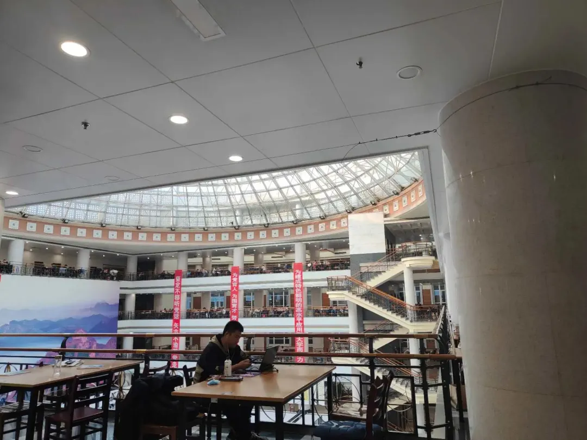

使用小程序
考研时间
2023年全国硕士研究生招生考试初试时间为2022年12月25日至26日(每天上午8:30—11:30，下午14:00—17:00)。

TIME
倒计时
1.千万不要在乎周围人对你的看法！他们有可能给你造成很大的压力，学习不是为老师，家长学的，而是为自己学的
2.考试时遇到不会的题目时，不要总想着好朋友都说很简单，自己竟然还不会，你应该这样想：我不会的题目别人也不会！要给自己信心，不要受同学的影响，只要全神贯注的做题目就行了.
感谢一路有你
祝考研学子心想事成，成功上岸! 星光不负追梦人，愿所有考研人旗开得胜，一战成硕!
排版|陈华
文字|陈华
审阅|红鲤